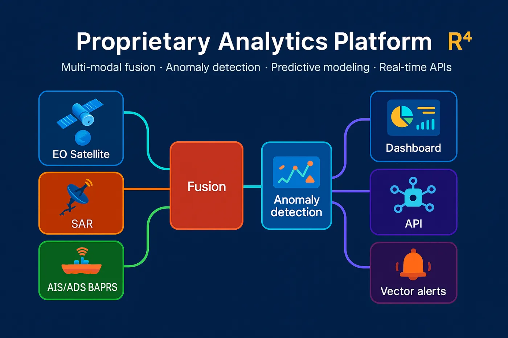

One picture of the Earth. Same moment. Any weather. Any hour.
R4 flies a small formation of satellites that look at the same place with four kinds of sensors at the same time — radar, camera, heat, and radio — so decision-makers get one complete, trustworthy picture, in minutes rather than days.
Satellites look at the world one sensor at a time.
Most satellites carry one kind of sensor. A camera cannot see at night or through clouds. Radar sees through weather but cannot identify what it sees. A heat sensor cannot read a ship's name. So operators wait for several satellites, several passes, and hours — sometimes days — to put the picture together.

The answer
Four sensors look at the same place at the same time.
R4's Insight Set — one microsatellite and two CubeSats flying together — collects radar, camera, heat, and radio observations in a single pass. Each sensor sees what the others cannot, and every observation is stamped to the same moment.
Every observation is aligned to the same place and time.
Sees day and night, in clear sky and through clouds.
Onboard computing turns observations into answers before they reach the ground.
Outputs drop into the maps and command systems you already use.
The system
Three satellites. One analytical platform.
The spacecraft and the ground software are designed as one continuous chain — from sensor to decision.
In space
Insight Set™
One microsatellite and two CubeSats that fly in formation and share the sensing workload.